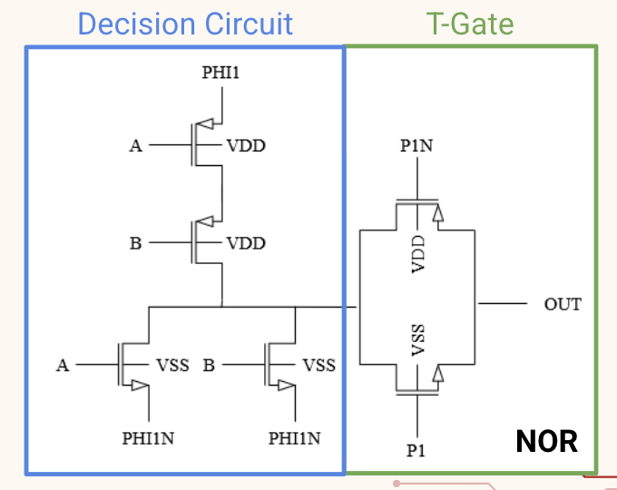
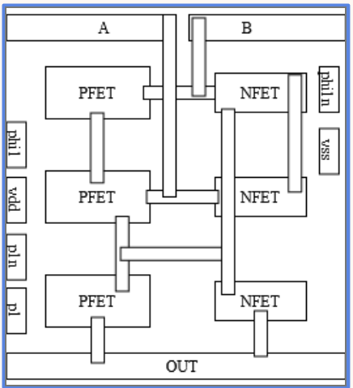

Adiabatic Logic Gates



Overview
A C2S2 2026 project which redesigns a flash ADC comparator with a 3-bit priority encoder using adiabatic logic instead of standard CMOS. This was aimed to cut power consumption below the conventional design. However, throughout this process we realized that this design's tradeoffis that it involves more complex integrations to preseve power loss.
More Details
The topology we used was adiabatic logic, which theoretically saves power by avoiding the abrupt voltage swings that cause standard CMOS to dissipate heat when a node charges or discharges. Instead, it uses a slow, ramping "trapezoidal" power clock to charge and discharge nodes gradually, recovering most of that energy back into the supply. Within that family we chose SCRL, split level charge recovery logic, over alternatives like ECRL, PFAL, and CAL because it stays closer to conventional CMOS structure and keeps the power clock scheme simpler. Several alternatives need as many as 24 power clock phases and rely on more complex pipelining and a "reverse" logic path that, honestly, we never fully worked out, so SCRL let us avoid that complexity while still getting adiabatic behavior.
SCRL uses transmission gates as buffers between stages instead of standard CMOS gates because they conduct current both ways, letting charge flow onto a node during evaluation and back out during recovery instead of being dumped to ground. Each transmission gate turns on before its decision circuit evaluates and off afterward, holding its output charge for the next stage. Because of this, neighboring clocks must be staggered and overlapping: a stage can only evaluate once the prior stage is stable and holding, and must finish capturing that value before the prior stage starts recovering and its output decays. This overlapping multi phase clocking keeps every stage's input stable while it evaluates and lets its charge return to the supply, which is what makes SCRL adiabatic. In total the design needed 16 phase signals, with φ phases driving the decision circuits and p phases driving the transmission gates.
Problems I Encountered
For me, the layout stage was the hardest part, since this was one of my first semi-independent projects in Cadence involving layout, where I had to balance the width of the metal tracks against the size of the transistors themselves. After finishing the first layout pass, I found that shrinking the transistors actually reduced power further, so I resized them, redid the layout, and re-ran testing to confirm the new version still worked correctly. On the design side, a major decision was how to generate the 16 clock phases the circuit needed. I built dedicated testbenches to verify the clock generation and worked out the correct spacing between phases and exactly when each trapezoidal ramp should begin, since getting that timing wrong would break the energy recovery the whole design depends on. This project made me realize how connected each step of this process really is. It pushed me to test more thoroughly at each stage, and to get better at backtracing an issue to the step that actually caused it.
Results
The final results showed that power savings were about 7.2x lower than a double-tailed comparator, and 19–33x lower than a standard CMOS implementation, confirmed through post-extraction simulation that accounted for parasitic capacitance.
← Back to projects